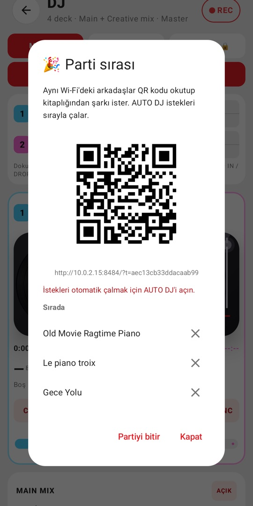

Melodi Mix
4 deck'li DJ uygulaması · 4-deck DJ app for Android

Türkçe
Telefonundaki müzikle ve Creative Commons / kamu malı açık müzikle mix yap: BPM ve ton analizi, sync, loop, efektler (echo, reverb, flanger, phaser, beat repeat) ve mix kaydı. Yeni parti sırası ile aynı Wi-Fi'deki misafirler QR kodu okutup şarkı ister, Auto DJ istekleri sırayla çalar. İnternet radyoları ve YouTube'daki müzik listeleri de uygulamada; YouTube videoları yalnızca resmi YouTube oynatıcısında izlenir.
English
Mix the music on your phone and openly licensed (Creative Commons / public domain) music: BPM and key analysis, sync, loops, effects (echo, reverb, flanger, phaser, beat repeat) and mix recording. With the new party queue, guests on the same Wi-Fi scan a QR code to request songs and Auto DJ plays them in order. Internet radio and music charts on YouTube are included; YouTube videos play only in the official YouTube player.
Deutsch
Mische die Musik auf deinem Telefon und offen lizenzierte Musik (Creative Commons / gemeinfrei): BPM- und Tonartanalyse, Sync, Loops, Effekte (Echo, Hall, Flanger, Phaser, Beat Repeat) und Mix-Aufnahme. Mit der neuen Party-Warteschlange wünschen sich Gäste im selben WLAN per QR-Code Songs, Auto DJ spielt sie der Reihe nach. Internetradio und Musikcharts auf YouTube sind enthalten; YouTube-Videos laufen nur im offiziellen YouTube-Player.